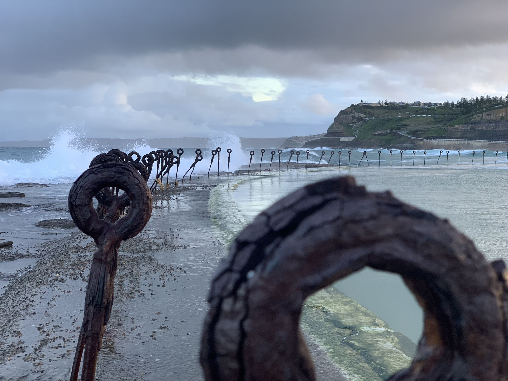
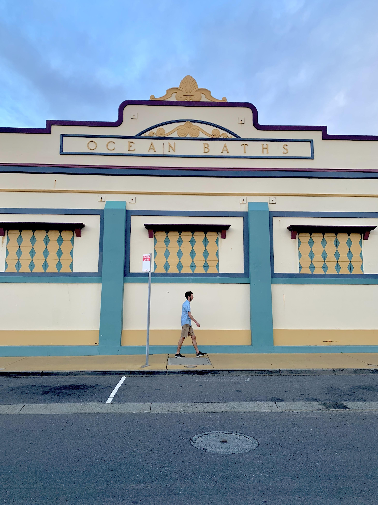
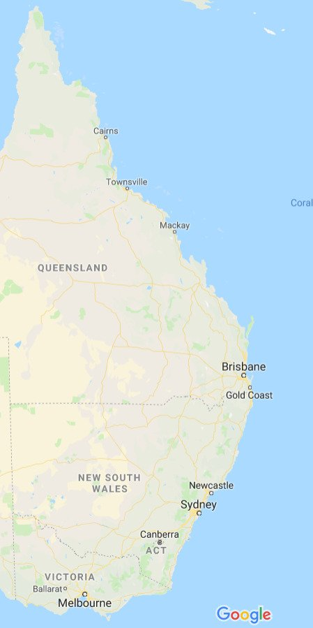

Segway
I’m writing this from a local coffee shop in Frederick, MD, all the way back in the United States of America. After more than 5 months of travel and study, the long trip has come to an end. With my outbound flight bearing down on me, I spent the last weeks of my time in Australia squeezing out every last drop of value I could. Many tasks got unceremoniously labeled as an “America Problem” and ignored. Blogging was most certainly one of them.
With this post, I hope to catch up to the present and give myself one last shot at reflection. Maybe give a few shout-outs along the way.
After I finished up my final exams. I took a leap of courage and went on my first ever truly solo trip. Four days to explore one of the largest cities in Australia, Melbourne.


Exploring a city on my own was an amazing growing experience. I will be the first to say it wasn’t the most enjoyable trip I’ve taken, but it definitely was one of the most rewarding. I took the trip with the intention of forcing myself out of my comfort zone. One of my long time personal projects has been to get over my anxiety of talking to strangers. Before the trip, I was definitely capable of it, but by no means comfortable. Another benefit of the trip is that when you are alone, you get to do exactly what you want to do. There is no worrying if one activity will upset the group, etc.. It teaches you what kind of traveler you are.
Arriving back at Newcastle from Melbourne, the goodbyes began. Many of the friends I had made over the course of the semester were either preparing to go off on month long trips, or head back home. These few days were a flurry of packing, farewells, and last minute excursions to cafes and beaches.


Next thing I knew, it was time to meet up with Dani at the Sydney Airport! After one day rest in Sydney, we were moving up the coast to Brisbane and the Gold Coast, then finally up to Cairns, the Daintree Rainforest, and the Great Barrier Reef.

This trip served as the final hurrah for my time in Australia. It was neat to share just a little bit of my study abroad experience with my sister, and to explore such amazing locations together.


After this trip finished, a few days of packing and final goodbyes led to the 36 hour travel day that has brought me here.
I was lucky to sit next to a very good friend for the 14 hour leg from SYD to LAX, helping pass the time and fend off sleep. For my next two flights home, I managed to stay awake until I finally fell asleep at a normal time. So far, it seems like my strategy effectively removed any jetlag.
Coming back home was very weird. With 6 months of new experiences behind me, I came back to a house, room and city that are almost exactly the same as I left them. I changed, my American life didn’t. One word, eerie. So, in order to adjust back, I quickly made changes to reflect my new experiences. It’s still an ongoing process.
Just looking back at any of the pictures on my phone, I am struck by hundreds of memories and small moments all associated with a single picture. To tell the truth, the moments that give me the most joy are all hidden in the details. Its the memories evoked by the picture, the punchline of a joke, or the beginning of a friendship, that hit me the hardest. The common thread with all these moments? It’s the people. The amazing landscapes and views found by traveling are just the backdrop for the real show. Its through the people that you learn about the country’s culture, yourself, and create new memories. The prize of travel is not a destination or a photo opportunity, its human connection. I am immensely thankful for all of the wonderful people I have had the privilege of meeting, and can only begin to speak about the impact they have had on my life. My world has been redefined, and I couldn’t be happier.
Thank you Australia.